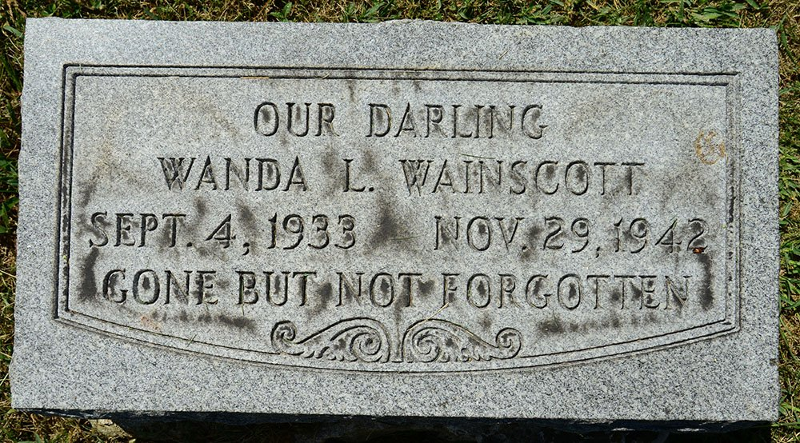

29 Nov 1942 · age 9 Died at home, 956 Martin Street, Cincinnati DOCUMENTED
1 Dec 1942 Buried at Baltimore Pike Cemetery DOCUMENTED
Life Story
Wanda Louise Wainscott was born in Cincinnati on 4 September 1933, the second daughter of Ray Wainscott and Elizabeth Lawrence. DOCUMENTED She died at home on Martin Street on 29 November 1942, aged nine, and was buried at Baltimore Pike Cemetery near her little sister Margaret. DOCUMENTED Her stone reads "Our Darling ... Gone But Not Forgotten." SUPPORTED
Photo Gallery
Her headstone: "Our Darling · Wanda L. Wainscott · Sept. 4, 1933 – Nov. 29, 1942 · Gone But Not Forgotten." Photo by LauraF, Find a Grave

Her headstone in 2014. Photo by Eric Leindecker, Find a Grave
Sources and Evidence
Ohio Deaths 1908–1953, Wanda Louise Wainscott, 29 November 1942, Cincinnati, file 66575: FamilySearch (the index wrongly standardizes the place to Defiance; the original says Cincinnati). DOCUMENTED
Grades: DOCUMENTED an original record says it · SUPPORTED several records point to it · FAMILY ACCOUNT the family's own telling · UNPROVED a lead, not proved.
Research Notes and Open Questions
A school or church record, or a 1942 Cincinnati death notice, may add more about her short life.
DNA
No DNA matches linked yet.
Profile history: Created 11 November 2026 from death certificates, death and marriage indexes, census records, a 1965 death notice and Find a Grave.